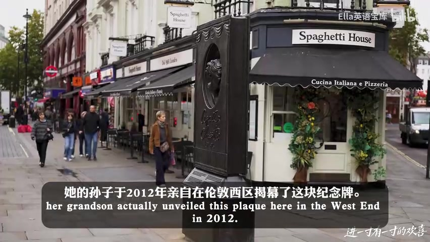
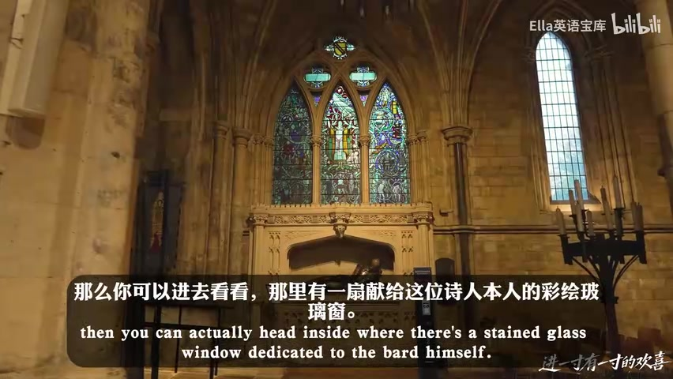
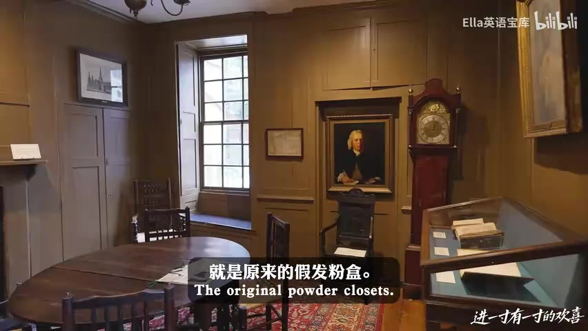
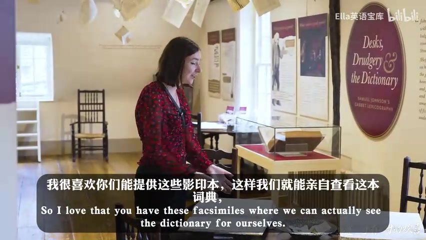
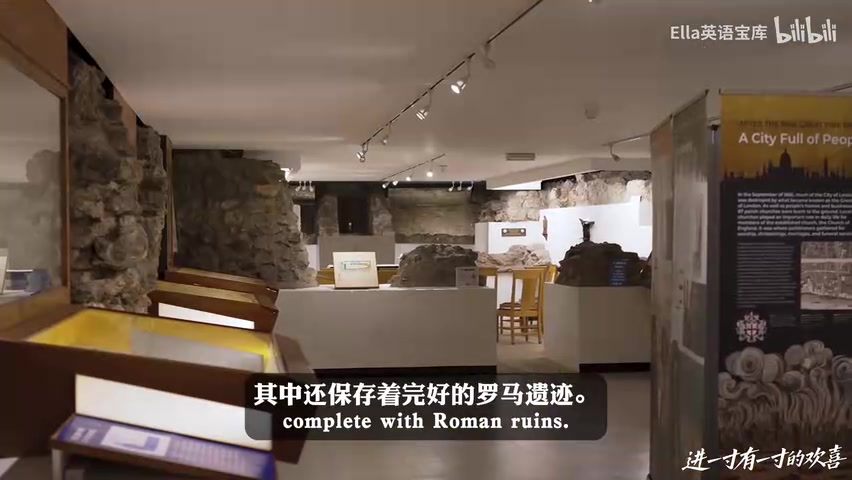
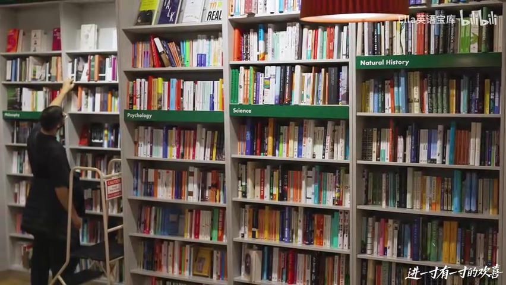

01
中文
From Shakespeare to Sherlock Holmes, London has a rich literary history.
EN
从莎士比亚到福尔摩斯，伦敦有着丰富的文学史。
表达提示a rich literary history（丰富的文学史）

Scene English · 旅行指南 · 文学伦敦
[Bilingual] London's Best Bookshops, Literary Pubs, and Historic Churches | A Literary Travel Guide
🎧 语音讲解
Opening: Literary London and Agatha
情境从莎士比亚到福尔摩斯，伦敦有一条绵延的文学史。视频先介绍阿加莎·克里斯蒂：她的小说销量超20亿本、100多种语言，她的《捕鼠器》自1952年起在圣马丁剧院演出至今，是世界最长寿的舞台剧。语域：旅行指南，文化科普。
From Shakespeare to Sherlock Holmes, London has a rich literary history.
从莎士比亚到福尔摩斯，伦敦有着丰富的文学史。
表达提示a rich literary history（丰富的文学史）
She's one of the bestselling authors of all time, with over two billion books sold.
她是有史以来最畅销的作家之一，作品销量超过20亿本。
表达提示bestselling author（畅销作家）；over two billion（超过20亿）
The Mousetrap has been running at St Martin's Theatre since 1952.
《捕鼠器》自1952年起就在圣马丁剧院上演。
表达提示has been running（持续上演）
丰富文学史 → a rich literary history / a long literary heritage
持续上演 → has been running / has been on stage
Baker Street: A Sherlock-Themed Pub
情境福尔摩斯是伦敦最受欢迎的小说人物，诞生于阿瑟·柯南·道尔笔下。可以去221B贝克街的福尔摩斯博物馆和车站外的雕像。视频重点推荐福尔摩斯主题酒吧，里面满是维多利亚风格的彩绘玻璃和画作，楼上还有迷你博物馆。语域：旅行指南，景点推荐。
One of London's favourite fictional characters has to be Sherlock Holmes.
伦敦最受欢迎的小说人物之一，非福尔摩斯莫属。
表达提示fictional characters（虚构人物）；has to be（非…莫属）
This is a prime example of Victoriana.
这里是维多利亚风格的典范。
表达提示a prime example（典范）；Victoriana（维多利亚风格）
There's even a small museum with a recreation of Sherlock's study.
楼上甚至还有一个小博物馆，重现了福尔摩斯的书房。
表达提示a recreation of（重现）
非…莫属 → has to be / is surely
重现 → a recreation of / a faithful reproduction
Bookshop Tour: Cecil Court and Second-Hand Books
情境喜欢小众专业书的可以去 Cecil Court，那里有童书、音乐书、占星书甚至灵性类书籍，莫扎特还曾在此住过。喜欢二手书的可以去 Any Amount of Books，品类齐全，最低1.5英镑起，两层楼从珍本到艺术大部头应有尽有。语域：旅行指南，书店盘点。
If you're interested in niche and specialist books, then you'll want to come to Cecil Court.
如果你喜欢小众专业书，那一定要来 Cecil Court。
表达提示niche and specialist books（小众专业书）
This is even where Mozart once lived.
这里甚至还是莫扎特曾居住过的地方。
表达提示where Mozart once lived（莫扎特旧居）
They stock a wide array of genres, with prices starting at just £1.50.
他们书目品类很全，价格最低只要1.5英镑。
表达提示a wide array of（各种各样的）；starting at（起价）
小众专业 → niche and specialist / obscure and specialised
品类很全 → a wide array of / a broad range of

Fitzrovia and Daunt Books
情境Fitzroy Tavern 离牛津街只有一步之遥，历史地位高到整个 Fitzrovia 街区都因它得名，狄兰·托马斯和乔治·奥威尔都是常客。而在伦敦最美街区 Marylebone，藏着最美书店 Daunt Books：银行家创立，专精旅行与游记文学。语域：旅行指南，人文故事。
The area of Fitzrovia is actually named for it.
整个 Fitzrovia 街区实际上是以这家酒吧命名的。
表达提示be named for（以…命名）
This was a favourite drinking hall for many writers, including Dylan Thomas and George Orwell.
这是许多作家的心头好酒馆，包括狄兰·托马斯和乔治·奥威尔。
表达提示a favourite drinking hall（钟爱的酒馆）
What's particularly exciting about Daunt is that it specialises in travel writing.
Daunt 特别让人兴奋的是它专精旅行文学。
表达提示specialise in（专精）；travel writing（旅行文学）
以…命名 → be named for / take its name from
专精 → specialise in / focus on / cater to

Blue Plaques and the British Library
情境伦敦街头随处可见蓝色牌匾，标记名人故居，比如弗吉尼亚·伍尔夫1907到1911年间在此居住并开始写第一本小说。大英图书馆是英国国家图书馆，收藏超1.7亿件，几乎收录了英国和爱尔兰出版的所有书，免费参观，还常年办特展。语域：旅行指南，知识点盘点。
These little blue plaques denote where someone famous once lived or worked.
这些蓝色小牌匾标记着名人曾居住或工作过的地方。
表达提示denote（标记）；blue plaques（蓝色牌匾）
This is where Virginia Woolf lived between 1907 and 1911.
这是弗吉尼亚·伍尔夫1907至1911年间居住的地方。
表达提示lived between（在…年间居住）
It's home to over 170 million items in its collection, and it's free to visit.
馆藏超过1.7亿件，而且免费参观。
表达提示home to（收藏着）；free to visit（免费参观）
标记 → denote / mark the spot where
免费参观 → free to visit / no entrance fee

Dr Johnson's House and the English Dictionary
情境约翰逊博士故居是18世纪伦敦最重要的文学地标之一。塞缪尔·约翰逊在这里写出第一部权威英语词典，他出生在书店里，28岁来伦敦谋生，留下名句「厌倦伦敦就是厌倦人生」。故居里的假发粉房还解释了「powder room」一词的由来。语域：文化讲解，历史故事。
When a man is tired of London, he is tired of life.
一个人厌倦了伦敦，就是厌倦了人生。
表达提示be tired of（厌倦）；经典名言
He wrote the first comprehensive, authoritative dictionary of the English language here.
他在这里写出了第一部全面权威的英语词典。
表达提示comprehensive（全面的）；authoritative（权威的）
Now we have the expression 'pop to the powder room' when you go to the bathroom.
今天我们上洗手间说的「去粉房」，就源于此。
表达提示the powder room（粉房/洗手间）；expression（表达）
厌倦 → be tired of / be weary of
源于此 → be linked to / trace back to

Francis Barber: Johnson's Closest Friend
情境故居里最动人的故事是弗朗西斯·巴伯：他生于牙买加的甘蔗种植园、出生即为奴隶，8岁被带到伦敦，后来成为约翰逊的家人，被约翰逊视为义子，是遗嘱中的唯一继承人。他还成为英格兰第一位黑人校长。语域：文化讲解，人物故事。
He was born into slavery on a sugar cane plantation in Jamaica.
他出生在牙买加的甘蔗种植园，一出生就是奴隶。
表达提示born into slavery（生而为奴）；sugar cane plantation（甘蔗种植园）
Barber becomes the most important person in Johnson's life in terms of his domestic relationships.
在家庭关系上，巴伯成了约翰逊一生中最重要的人。
表达提示domestic relationships（家庭关系）
He was the first black schoolmaster in England.
他是英格兰第一位黑人校长。
表达提示schoolmaster（校长）
生而为奴 → born into slavery / born enslaved
最重要的人 → the most important person / the closest to him

The Dictionary Garret and Fleet Street
情境故居顶层是词典阁楼，《词典》收录42773个词条，是最后一部由单人完成的巨作。约翰逊给「政治家」的定义藏着冷幽默。视频还巡礼舰队街：英国第一份日报《每日新闻》、圣布莱德教堂（记者大教堂）、红狮法院的印刷发明等。语域：文化讲解+旅行盘点，收尾升华。
This is about the last time in history you'll get a work of colossal size undertaken by a sole author.
这大概是历史上最后一次有如此巨作由单人完成。
表达提示colossal size（巨作规模）；a sole author（单人作者）
For 'politician' he's got just two definitions — one skilled in politics, and a man of artifice.
「政治家」他只有两个定义——精通政治的人，以及诡计多端的人。
表达提示definitions（定义）；a man of artifice（诡计多端者）
The first edition of England's first daily newspaper was published on 11 March 1702.
英国第一份日报的第一期，于1702年3月11日出版。
表达提示first edition（第一期）；daily newspaper（日报）
巨作 → a colossal work / a monumental achievement
冷幽默定义 → a man of artifice / dry wit in the definition
说某个地方以名人命名
介绍世界最长的演出
形容书店品类全
引用约翰逊名言
be named after（以…命名）必须有 be 动词。
「销量20亿本」是 sold over two billion books，不是 sold for。
生而为奴用 born into slavery，不是 born in。
「自1952年起持续上演」用现在完成进行时 has been running。